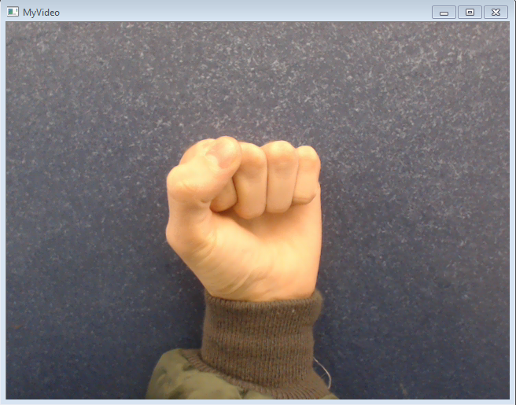
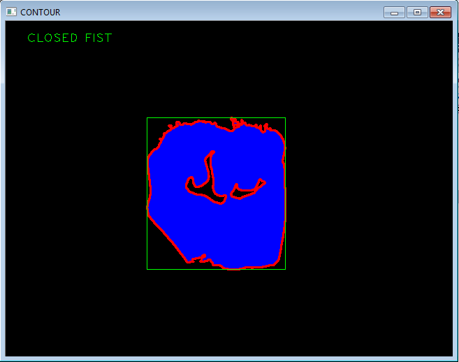
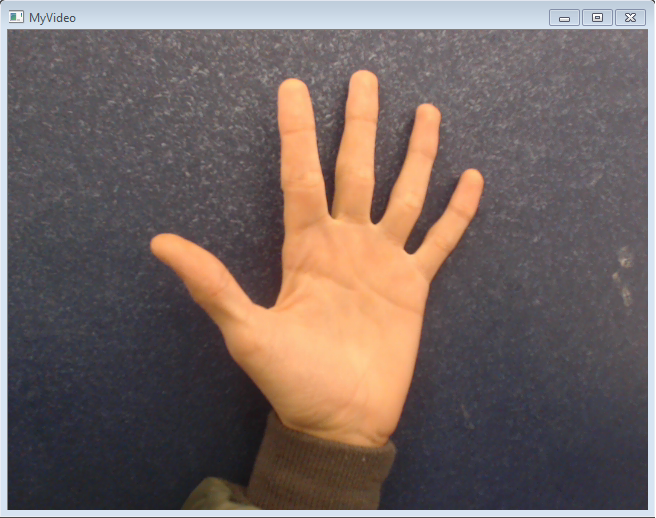
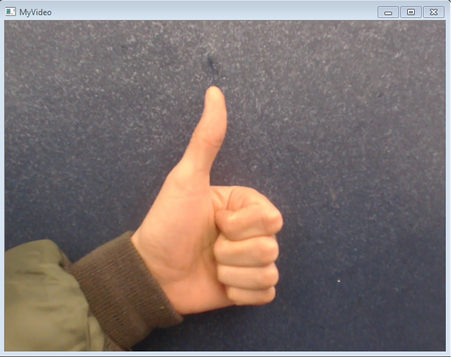
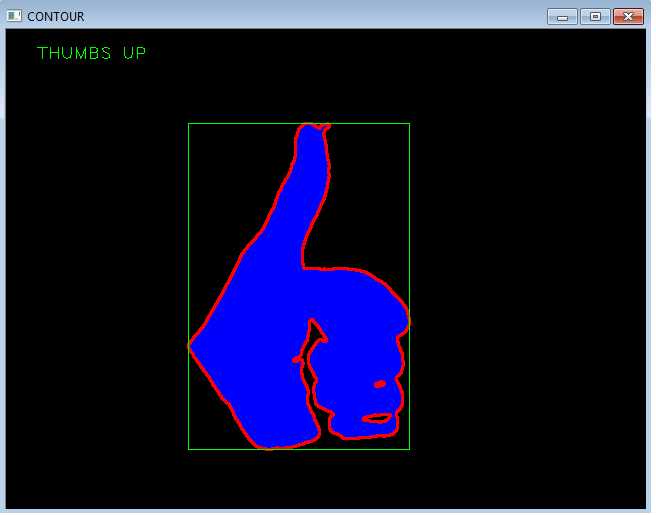

Problem Definition
For this project, we attempt to implement what we learned in class regarding vision tracking. Essentially, what we needed was a method of recognizing a hand and isolating it from the background, and then developing an algorithm that would recognize various gestures of that hand. Though we only demonstrate that our project recognizes the different hand gestures, there are various ways we could apply our program to some sort of motion based input. The potential for these motion based controls is vast.
For our implementation, we made two key assumptions. The first is that only the user's hand is in view of the camera. If the user's body or face is in the way of the camera, then our program has difficulties recognizing the hand. The second assumption is that the background of the hand is a different color from the hand itself. This is to delineate the hand from the background.
Method and Implementation
In our implementation we sort of combined labs two and three as a base template for our program. Essentially, we created many different functions including mySkinDetect, myFrameDifferencing, and myMotionEnergy in an attempt to implement them into our program, but our final implementation used none of these, instead focusing on a single program, myContour.
Our main function, myContour, follows the guidelines from lab 3 to find a contour of the hand. First, it converts the current frame to gray, and then it blurs it. After that, it converts the frame into a binary image using thresholding. Next, we find the largest contours and draw contours using built-in openCV functions. Once the contours are found and drawn, a rectangle is drawn around them. This rectangle resizes itself around the blue contours. This is the base of lab 3 combined with an active live stream from the camera.
Once we have the contours in a live stream, we basically extract the green rectangle and set it to its own matrix. As the green rectangle is always resizing itself with our hand (despite distance from the camera), we can accurately count the percentage of pixels in the rectangle that are blue (i.e. a part of our hand) out of the total number of pixels in the rectangle. This is our key method of gesture recognition. We tested three different gestures: an open five (which admittedly works best when you really stretch your hand out), a closed fist, and a thumbs up; and found the average range of blue pixel percentages that match each gesture. From there, we created a small graphical output on the contour window that fairly accurately predicts what gesture we are making.
My Contribution
In this project, I was a main contributor in the development of all useful functions. I helped implement the steps for the basic contour function from lab 3 into the framework of lab2 so that it would work on active frames. I also aided in the creation of the gesture detection algorithm, and tested to find the correct value ranges for each hand gesture. Additionally, I worked on the graphical output on the screen as a result of our algorithm detecting a gesture.
Experiments
Confusion Matrix
| Predicted result | ||||
|---|---|---|---|---|
| Fist | Open Five | Thumb Up | ||
| Actual result | Fist | 8 | 2 | 0 |
| Open Five | 2 | 8 | 0 | |
| Thumb Up | 1 | 0 | 9 | |
Results
Results | ||
| Trial | Source Image | Result Image |
| Closed Fist |  |  |
| Open Five |  | |
| Thumb Up |  |  |
Discussion
Discuss your method and results:
- Strengths:Our algorithm is efficient without lagging. Under the correct conditions, it can distinguish our three gestures accurately.
- Weaknesses: 1.Our program may mess up with other kinds of hand shapes that we haven't prepared. For example, a three finger gesture and the fist geture can not be distinguished, because the percentages of those gestures may overlap.
- Expectations and Limitations: We initially expected to detect more hand gestures, but our method limits our detections. If we want to detect more gestures, we need to use the template matching method to calculate the percentage difference. Our method currently is not general enough. However, for the gestures that we did provide, we find that our program displays the results pretty accurately.
- Improvement: Our method could be improved if we had time to implement our skin detect and motion energy functions. With skin detect, we would eliminate a lot of the background noise that currently exists in the camera feed. With motion energy, we could expand our gesture recognition to moving gestures such as a wave in a certain direction as opposed to just shapes.
2.The number of gestures that our program detects is limited.
3.Due to some unknown problem, the camera must be kept stable. If there is too much erratic motion, the program may terminate.
Conclusions
Initially, we expected gesture detection to be quite simple. However, as we progressed we found that the task at hand was actually hard to achieve. I believe that while our method may be unorthodox, it is actually pretty precise and efficient for the limited number of gestures that we have provided if it is run under the correct conditions. I believe that in order to make a better program, we need to implement some of the other functions that we previously created (skin detect, motion energy) in addition to what we already have.
Credits and Bibliography
Collaboration with Lai Wei, Shirui Ye and Chang Gao
Various code from labs two and three